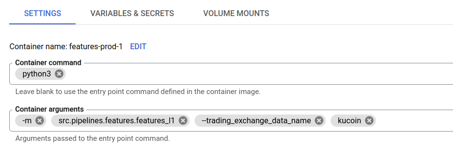

Deploy Jobs
Overview
Two core containers are available for researchers to run jobs on the cloud: * Features jobs * Strategies jobs
Deployment Steps
Add your module to the appropriate directory:
Features modules:
src/pipelines/featuresStrategy modules:
src/pipelines/strategies
Update
requirements.txtandDockerfilein the directory if neededRun cloud deployment command while pointing to the appropriate docker file
python3 -m src.deploy_cloud_run_job \ --job-name [JOB-NAME] \ --docker-path [DOCKER-FILE-PATH]
example
python3 -m src.deploy_cloud_run_job \ --job-name example-job \ --docker-path src/pipelines/features/Dockerfile
The container should be built and the job is available in GCP console: https://console.cloud.google.com/run/jobs
edit job args in GCP and execute
